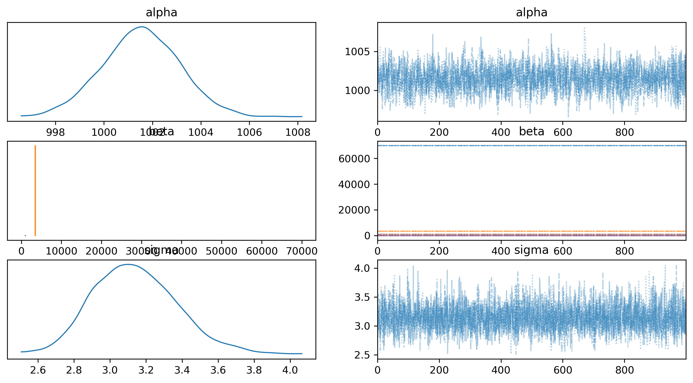

Airline Loyalty Causal Inference
Milestone 1: Project Idea
I’m really passionate about anything related to airlines, so for this project, I want to take a causal approach to analyzing airline data. Specifically, I’m interested in whether loyalty card programs actually increase an airline’s revenue, measured by Customer Lifetime Value (CLV).
Milestone 2: Data Story
Causal Inference Question: Does having a higher loyalty card status (Star > Nova > Aurora) cause an increase in CLV?
Context: I want to study if having a higher loyalty card status for an airline causes an increase in CLV. CLV is Customer Lifetime Value. It is computed as the sum of all revenues (or invoices) generated by the customer for their flight bookings over their entire membership period. Basically, it’s how much total revenue a specific customer is expected to generate. The Star loyalty card is the highest, Nova is the next highest, and Aurora is third highest. In the data, only these 3 loyalties are listed.
The outcome would be positive and continuous values because it’s how much revenue is expected to be made under the CLV. Predictor variables that could influence CLV is salary, education level, marital status, total flights, and enrollment year/month. Other variables that could influence our outcome could be country of residence, gender, distance traveled, points redeemed, and dollar cost of points redeemed.
My story is that I believe that having a loyalty card increases the revenue you will make for the airline.
https://www.kaggle.com/datasets/agungpambudi/airline-loyalty-campaign-program-impact-on-flights/data
Milestone 3: DAG
For the first DAG I created, I chose to use the variables from my dataset. I believed that demographics each influenced both CLV and loyalty card status. I also believed that loyalty card status affected flights and points which in turn affected CLV.

This is the second DAG I created when I considered even more variables than my previous DAG. I added more demographics, flight aspects, and points/economic aspects.

I updated my DAG throughout the project and finalized it using Dagitty to give it a more polished and professional appearance. In this final DAG, the primary relationship I’m interested in is the effect of loyalty card status on Customer Lifetime Value (CLV).
Several other variables influence this relationship. Travel frequency plays a key role—it affects loyalty card status because people who travel more frequently are more likely to seek the benefits that come with being a frequent flyer. It also influences total flight distance, since more trips naturally lead to a greater accumulated distance. In turn, total flight distance affects CLV, as longer flights tend to be more expensive and generate more revenue for the airline.
Income is another upstream variable that influences travel frequency (higher income typically enables more travel), loyalty card status (some tiers may come with fees or require higher spending), and influences CLV (wealthier customers may spend more with the airline overall).
Company marketing strategy also feeds into the system by affecting travel frequency (e.g., through increased exposure to promotions), customer engagement, and loyalty card status (via targeted advertising). All of these, in turn, impact CLV. Customer engagement directly affects both loyalty card status and CLV, as more engaged customers are more likely to enroll in loyalty programs and continue spending.
Finally, loyalty card status also affects upgrades/perks and length of enrollment, both of which can enhance a customer’s experience and increase their overall value to the airline, thereby contributing to CLV.
Milestone 4: Identification Strategy
Based on the DAG, here are all possible paths (23 paths) from LCS (Loyalty Card Status) to CLV (Customer Lifetime Value). For simplicity, initials are used instead of the full names from the DAG. Key: CLV is Customer Lifetime Value, LCS is Loyalty Card Status, I is Income, TF is Travel Frequency, FD is Flight Distance, CMS is Customer Marketing Strategy, and CE is Customer Engagement.
- LCS, CLV
- LCS, I, CLV
- LCS, I, TF, CLV
- LCS, I, TF, FD, CLV
- LCS, I, TF, CMS, CLV
- LCS, I, TF, CMS, CE, CLV
- LCS, TF, CLV
- LCS, TF, I, CLV
- LCS, TF, FD, CLV
- LSC, TF, CMS, CLV
- LCS, TF, CMS, CE, CLV
- LCS, CMS, CLV
- LCS, CMS, CE, CLV
- LCS, CMS, TF, CLV
- LCS, CMS, TF, FD, CLV
- LCS, CMS, TF, I, CLV
- LCS, CE, CLV
- LCS, CE, CMS, CLV
- LCS, CE, CMS, TF, CLV
- LCS, CE, CMS, TF, FD, CLV
- LCS, CE, CMS, TF, I, CLV
- LCS, UP, CLV
- LCS, LTE, CLV
Direct pipes - can estimate total causal effect through them
- LCS, UP, CLV
- LCS, LTE, CLV
Here are the backdoors & what to do about them:
- LCS, I, CLV – Fork, Condition on I
- LCS, I, TF, CLV – Fork, Pipe, Condition on TF
- LCS, I, TF, FD, CLV – Fork, Pipe, Pipe, Condition on FD
- LCS, I, TF, CMS, CLV –Fork, Collider, Fork, Condition on CMS
- LCS, I, TF, CMS, CE, CLV – Fork, Collider, Fork, Pipe, Condition on CE
- LCS, TF, CLV – Fork, Condition on TF
- LCS, TF, I, CLV – Fork, Pipe, Condition on I
- LCS, TF, FD, CLV – Fork, Pipe, Condition on FD
- LSC, TF, CMS, CLV – Pipe, Fork, Condition on CMS
- LCS, TF, CMS, CE, CLV – Pipe, Fork, Pipe, Condition on CE
- LCS, CMS, CLV – Fork, Condition on CMS
- LCS, CMS, CE, CLV – Fork, Pipe, Condition on CE
- LCS, CMS, TF, CLV – Fork, Pipe, Condition on CMS
- LCS, CMS, TF, FD, CLV – Fork, Pipe, Pipe, Condition on CMS & TF
- LCS, CMS, TF, I, CLV – Fork, Collider, Fork, Condition on CMS, TF, & I
- LCS, CE, CLV – Fork, Condition on CE
- LCS, CE, CMS, CLV – Pipe, Fork, Condition on CE or CMS
- LCS, CE, CMS, TF, CLV – Pipe, Fork, Pipe, Condition on CE or CMS or TF
- LCS, CE, CMS, TF, FD, CLV – Pipe, Fork, Pipe, Pipe, Condition on CE or CMS or TF
- LCS, CE, CMS, TF, I, CLV – Pipe, Fork, Collider, Fork, Condition on CE or CMS or TF or I
Adjustment Set: I, TF, CMS, and CE. In order to do causal inference, I need to condition on income, travel frequency, customer marketing strategy, and customer engagement.
Milestone 5: Simulate Data and Recover Parameters
In this code, a simulated dataset is created using various predictors (independent variables) to estimate the Customer Lifetime Value (CLV), which is the outcome (dependent variable). The code first defines the parameter values for each predictor, including factors like income, flight distance, travel frequency, customer marketing strategy, customer engagement, and loyalty card status. It then generates random values for these predictors and combines them in a linear equation to simulate CLV. This equation also includes a small amount of random noise to make the data more realistic.
After generating the data, a linear regression model is applied to it using the LinearRegression function from the sklearn library. The model is trained using the predictors (X) and the simulated CLV values. Once the model is trained, the code prints the estimated coefficients for each predictor, which represent how each variable impacts the CLV. By examining these coefficients, we can understand the relationship between the predictors and CLV.
# Import packages
import numpy as np
import polars as pl
import seaborn as sns
from sklearn.linear_model import LinearRegression
# Set random seed for reproducibility
np.random.seed(42)
# Set the parameter values.
beta0 = 1000
income = 70000
flight_dist = 3500
travel_freq = 5
cust_marketing_strat = 1
cust_engagement = 3
loyalty_card_status = 1000
n = 100
sim_data = (
# Simulate predictors using appropriate np.random distributions.
pl.DataFrame({
'x': np.random.uniform(0, 7, size=n),
'flight_dist': np.random.uniform(0, 10000, size=n),
'travel_freq': np.random.uniform(1, 10, size=n),
'cust_marketing_strat': np.random.uniform(0, 5, size=n),
'cust_engagement': np.random.uniform(1, 10, size=n),
'loyalty_card_status': np.random.choice([0, 1], size=n) # New binary predictor
})
# Use predictors and parameter values to simulate the outcome.
.with_columns([
(
beta0 + income * pl.col('x') + flight_dist * pl.col('flight_dist') +
travel_freq * pl.col('travel_freq') +
cust_marketing_strat * pl.col('cust_marketing_strat') +
cust_engagement * pl.col('cust_engagement') +
loyalty_card_status * pl.col('loyalty_card_status') + # Adding loyalty_card_status with a coefficient (e.g., 1000)
np.random.normal(0, 3, size=n)
).alias('CLV') # Renaming y to CLV
])
)
# Display the data
sim_data
# Visualize the data
# sns.scatterplot(data=sim_data, x='x', y='CLV')
# sns.lmplot(data=sim_data, x='x', y='CLV', height=6, aspect=1, scatter_kws={'s': 10}, line_kws={'color': 'red'})
# Specify the X matrix and CLV vector.
X = sim_data[['x', 'flight_dist', 'travel_freq', 'cust_marketing_strat', 'cust_engagement', 'loyalty_card_status']]
CLV = sim_data['CLV']
# Create a linear regression model.
model = LinearRegression(fit_intercept=True)
# Train the model.
model.fit(X, CLV)
# Print the coefficients
print(f'Intercept: {model.intercept_}')
print(f'Slope for x: {model.coef_[0]}')
print(f'Slope for flight_dist: {model.coef_[1]}')
print(f'Slope for travel_freq: {model.coef_[2]}')
print(f'Slope for cust_marketing_strat: {model.coef_[3]}')
print(f'Slope for cust_engagement: {model.coef_[4]}')
print(f'Slope for loyalty_card_status: {model.coef_[5]}')
# Have you recovered the parameters?
# Yes
# Intercept: 1001.5413256846368
# Slope for x: 69999.86275851386
# Slope for flight_dist: 3499.9999835407984
# Slope for travel_freq: 5.112035246336143
# Slope for cust_marketing_strat: 0.8774017286699657
# Slope for cust_engagement: 2.7190101859602787
# Slope for loyalty_card_status: 1000.1457705767122The code worked well because we successfully recovered our parameters and our estimated slopes are incredibly accurate to the parameter values we set.
Milestone 6: Exploratory Data Analysis
Loyalty Card Status: Loyalty Card Status is which airline loyalty card you have, whether that’s Star, Nova, or Aurora. Here is a break down of the data by type of loyalty card. We can see that most people have the highest loyalty card, Star, followed by Nova and then by Aurora.
# Create a bar plot for loyalty_card_status
ax = sns.countplot(x='Loyalty Card', data=data)
# Set labels and title
plt.xlabel('Loyalty Card Status')
plt.ylabel('Count')
plt.title('Distribution of Loyalty Card Status')
# Add the count labels on top of the bars without decimals
for p in ax.patches:
ax.annotate(f'{int(p.get_height())}',
(p.get_x() + p.get_width() / 2., p.get_height()),
ha='center', va='center',
fontsize=12, color='black',
xytext=(0, 5), textcoords='offset points')
# Save the figure
plt.savefig('loyalty_card_distribution_bar_chart.png', dpi=300, bbox_inches='tight')Income: Most people have an income between roughly $80,000 and $125,000, which makes sense. There are of course some who have higher salaries, hence the right skew.
# Clean the data by removing null, empty, and negative salary values
data_clean = data[data['Salary'].notnull() & (data['Salary'] != '')]
data_clean = data_clean[data_clean['Salary'] >= 0]
# Plot the histogram
plt.hist(data_clean['Salary'], bins=8, color='skyblue', edgecolor='black')
plt.title('Histogram of Salary')
plt.xlabel('Salary')
plt.ylabel('Frequency')
# Save the figure
plt.savefig('../figures/salary_histogram.png', dpi=300, bbox_inches='tight')Travel Frequency: This is how frequently a person travels. I do not have this variable in my dataset.
Customer Marketing Strategy: This is how well the airline markets their products. I don’t have a direct variable for this in my dataset but I do know which enrollment type people did when they got a loyalty card as well as which loyalty card.
# Create a bar plot for Enrollment Type
ax = sns.countplot(x='Enrollment Type', data=data)
# Set labels and title
plt.xlabel('Enrollment Type')
plt.ylabel('Count')
plt.title('Distribution of Enrollment Type')
# Add the count labels on top of the bars without decimals
for p in ax.patches:
ax.annotate(f'{int(p.get_height())}',
(p.get_x() + p.get_width() / 2., p.get_height()),
ha='center', va='center',
fontsize=12, color='black',
xytext=(0, 5), textcoords='offset points')
# Save the figure
plt.savefig('../figures/enrollment_type_bar_chart.png', dpi=300, bbox_inches='tight')Customer Engagement: This is how involved a person is with the airline. I do not have this variable in my dataset.
CLV: Customer Lifetime Value is how much revenue a single person generates the airline company. It seems that most people earn the airline between roughly $2,000 and $15,000.
# Clean the data and remove negative values
data_clean = data[data['CLV'].notnull() & (data['CLV'] != '')]
data_clean = data_clean[data_clean['CLV'] >= 0]
# Plot the histogram
plt.hist(data_clean['CLV'], bins=6, edgecolor='black')
# Add titles and labels
plt.title('Distribution of Customer Lifetime Value (CLV)')
plt.xlabel('Customer Lifetime Value (CLV)')
plt.ylabel('Count')
# Save the figure
plt.savefig('../figures/clv_histogram.png', dpi=300, bbox_inches='tight')Milestone 7: Estimate Causal Effects
In this milestone, we estimate the causal effects of several customer-related factors on Customer Lifetime Value (CLV) using a Bayesian linear regression approach. We start by simulating a dataset with realistic variability in customer behavior, including features such as flight distance, travel frequency, marketing strategy engagement, and loyalty card status. We then specify a probabilistic model using PyMC, assigning priors to the intercept and coefficients, and defining a likelihood function based on the simulated CLV data. After sampling from the posterior distribution, we summarize the results and visualize the marginal posterior distributions to assess parameter uncertainty and convergence. This modeling approach allows for more nuanced inference compared to traditional frequentist methods, particularly when quantifying uncertainty around effect estimates.
# eval: false
import numpy as np
import polars as pl
import pymc as pm
import arviz as az
import seaborn as sns
import matplotlib.pyplot as plt
np.random.seed(42)
# Set the parameter values.
beta0 = 1000
income = 70000
flight_dist = 3500
travel_freq = 5
cust_marketing_strat = 1
cust_engagement = 3
loyalty_card_status = 1000
n = 100
# Simulate Data
sim_data = (
pl.DataFrame({
'x': np.random.uniform(0, 7, size=n),
'flight_dist': np.random.uniform(0, 10000, size=n),
'travel_freq': np.random.uniform(1, 10, size=n),
'cust_marketing_strat': np.random.uniform(0, 5, size=n),
'cust_engagement': np.random.uniform(1, 10, size=n),
'loyalty_card_status': np.random.choice([0, 1], size=n)
})
.with_columns([
(
beta0 + income * pl.col('x') + flight_dist * pl.col('flight_dist') +
travel_freq * pl.col('travel_freq') +
cust_marketing_strat * pl.col('cust_marketing_strat') +
cust_engagement * pl.col('cust_engagement') +
loyalty_card_status * pl.col('loyalty_card_status') +
np.random.normal(0, 3, size=n)
).alias('CLV')
])
)
# Separate predictors and outcome
X = sim_data[['x', 'flight_dist', 'travel_freq', 'cust_marketing_strat', 'cust_engagement', 'loyalty_card_status']].to_numpy()
CLV = sim_data['CLV'].to_numpy()
# Bayesian Linear Regression Model
with pm.Model() as clv_model:
# Priors
alpha = pm.Normal('alpha', mu=0, sigma=1000)
beta = pm.Normal('beta', mu=0, sigma=50000, shape=X.shape[1]) # One coefficient per feature
sigma = pm.HalfNormal('sigma', sigma=100)
# Likelihood
mu = alpha + X @ beta # Matrix multiplication of predictors and coefficients
y_obs = pm.Normal('y_obs', mu=mu, sigma=sigma, observed=CLV)
# Posterior Sampling
trace = pm.sample(1000, return_inferencedata=True)
# Summary of results
summary = az.summary(trace, round_to=2)
print(summary)
# Save the figure as a file
plt.savefig("../figures/trace_plot.png", dpi=300, bbox_inches="tight")Initializing NUTS using jitter+adapt_diag...
Multiprocess sampling (4 chains in 4 jobs)
NUTS: [alpha, beta, sigma]C:\Users\rhigb\anaconda3\envs\pymc_env\lib\site-packages\rich\live.py:231: UserWarning: install "ipywidgets" for
Jupyter support
warnings.warn('install "ipywidgets" for Jupyter support')
Sampling 4 chains for 1_000 tune and 1_000 draw iterations (4_000 + 4_000 draws total) took 46 seconds.
mean sd hdi_3% hdi_97% mcse_mean mcse_sd ess_bulk \
alpha 1001.54 1.57 998.56 1004.44 0.04 0.03 1716.47
beta[0] 69999.86 0.16 69999.55 70000.15 0.00 0.00 2980.24
beta[1] 3500.00 0.00 3500.00 3500.00 0.00 0.00 2676.18
beta[2] 5.11 0.13 4.87 5.34 0.00 0.00 2797.21
beta[3] 0.88 0.23 0.46 1.33 0.00 0.00 2803.72
beta[4] 2.72 0.11 2.51 2.95 0.00 0.00 2857.42
beta[5] 1000.14 0.66 998.90 1001.36 0.01 0.01 2888.85
sigma 3.14 0.23 2.73 3.58 0.00 0.00 3357.19
ess_tail r_hat
alpha 2254.65 1.0
beta[0] 2647.25 1.0
beta[1] 2493.25 1.0
beta[2] 3006.42 1.0
beta[3] 2695.00 1.0
beta[4] 2503.09 1.0
beta[5] 2612.51 1.0
sigma 2569.07 1.0
<Figure size 672x480 with 0 Axes>
The posterior summary shows that the model recovered the true parameter values with high accuracy and precision. All estimated coefficients are very close to the values used in the data-generating process. For instance, beta[0] (the coefficient on x) is estimated at 69,999.86, nearly identical to the true value of 70,000, and beta[1] for flight_dist is exactly 3500.00, with virtually no variation. The same holds for beta[5] (loyalty_card_status), which was set to 1000 and estimated at 1000.14.
The standard deviations and HDIs (highest density intervals) around these estimates are quite narrow, suggesting low uncertainty and strong signal in the data. The noise parameter sigma is estimated at 3.14, closely matching the standard deviation of the noise added during simulation. Additionally, convergence diagnostics are excellent—\(\hat{R}\) values are all 1.0, and effective sample sizes (ESS) are comfortably high, indicating stable and reliable inference across chains.
From a causal perspective, these results are encouraging. The fact that the posterior means align closely with the known data-generating values suggests that the model can reliably recover true causal effects when the assumptions are met.
Milestone 8: Intermediate Presentation
See my intermediate presentation Intermediate Presentation Slides. To summarize some feedback:
- I need to make sure my salary histogram does not have a bin nor data that goes below 0.
- I need to make sure that my CLV histogram has touching bars. Additionally, I need to set the number of bins to something that makes sense for the data (so in my case, more bins).
Milestone 9: Run Conjoint Experiment
I ran a conjoint experiment through a survey using Discover Sawtooth Software. I was testing how desirable different package deals (with specified benefits) were for different loyalty cards. I got 33 responses. Here are my results:


If anyone answered “no” to these first 3 questions, the survey ended for them. I wanted to make sure that respondents were adults with jobs (so they have money for considering flights) and have had experience with the airline industry. 25 people continued with the survey because they answered yes to each of the 3 preliminary questions.


Most people travel once - a few times a year. Most people travel either to see family and friends or for vacation.

Since card name was randomly assigned with benefits to create a package, there isn’t anything to glean from this chart other than maybe people like the name “Nova” more.

20% or 25% discount on flight tickets were really desired.

Free seat upgrades and exclusive deals with partner services were much more popular than lounge access.

The most favorable choice was the cheapest package deal per month with the least favorable being the most expensive. This makes perfect sense.

Price was most important out the the 4 attributes, followed by benefit 2 (which had lounging, boarding, seating, and exclusive deals) and then by benefit 1 (which had discounted tickets and free checked bags).

24% of survey respondents would consider buying a loyalty card for themselves.


The majority of survey respondents are young adults who are either still in their Bachelors degree (not finished so they may have answered “High School or GED”) or have finished and their yearly income is very low because they are either newly graduated or still in college.

60% of respondents were female, 40% were male.

There is nearly a 50-50% split of marital status.
Milestone 10: Implement Diff-in-Diff Strategy
The purpose of Difference-in-Differences (Diff-in-Diff) is to estimate the causal effect of a treatment or intervention by comparing the changes in outcomes over time between a treatment group and a control group. I created a synthetic dataset to use this strategy.
# Import Packages
import arviz as az
import numpy as np
import pandas as pd
import pymc as pm
import seaborn as sns
# Outcomes
def outcome(t, control_intercept, treat_intercept_delta, trend, Δ, group, treated):
return control_intercept + (treat_intercept_delta * group) + (trend * t) + (Δ * treated * group)
def is_treated(t, intervention_time, group):
return (t > intervention_time) * group
# True parameters
control_intercept = 5000 # CLV for non-members
baseline_treat_intercept = 6000 # CLV for Aurora before upgrade
trend = 3000 # General CLV increase over time
Δ = 2000 # Treatment effect: additional CLV boost from upgrading to Star
intervention_time = 0.5 # When the upgrade happens
# Generating Synthetic Dataset
df = pd.DataFrame(
{
"group": [0, 0, 1, 1] * 10, # 0 = No Loyalty Card, 1 = Aurora
"t": [0.0, 1.0, 0.0, 1.0] * 10, # Time periods (Pre/Post)
"unit": np.concatenate([[i] * 2 for i in range(20)]),
}
)
df["treated"] = is_treated(df["t"], intervention_time, df["group"])
df["y"] = outcome(
df["t"],
control_intercept,
baseline_treat_intercept - control_intercept, # Initial difference in CLV
trend,
Δ,
df["group"],
df["treated"],
)
df["y"] += np.random.normal(0, 500, df.shape[0]) # Add noise
# Frequentist Diff-in-Diff Calculation
diff_control = (
df.loc[(df["t"] == 1) & (df["group"] == 0)]["y"].mean()
- df.loc[(df["t"] == 0) & (df["group"] == 0)]["y"].mean()
)
print(f"Pre/post difference in control group = {diff_control:.2f}")
diff_treat = (
df.loc[(df["t"] == 1) & (df["group"] == 1)]["y"].mean()
- df.loc[(df["t"] == 0) & (df["group"] == 1)]["y"].mean()
)
print(f"Pre/post difference in treatment group = {diff_treat:.2f}")
diff_in_diff = diff_treat - diff_control
print(f"Difference in differences = {diff_in_diff:.2f}")
# Bayesian Approach
with pm.Model() as model:
# Data
t = pm.MutableData("t", df["t"].values, dims="obs_idx")
treated = pm.MutableData("treated", df["treated"].values, dims="obs_idx")
group = pm.MutableData("group", df["group"].values, dims="obs_idx")
# Priors
_control_intercept = pm.Normal("control_intercept", 5000, 1000)
_treat_intercept_delta = pm.Normal("treat_intercept_delta", 1000, 1000)
_trend = pm.Normal("trend", 3000, 1000)
_Δ = pm.Normal("Δ", 2000, 1000)
sigma = pm.HalfNormal("sigma", 500)
# Expectation
mu = pm.Deterministic(
"mu",
outcome(t, _control_intercept, _treat_intercept_delta, _trend, _Δ, group, treated),
dims="obs_idx",
)
# Likelihood
pm.Normal("obs", mu, sigma, observed=df["y"].values, dims="obs_idx")
with model:
idata = pm.sample()
az.plot_trace(idata, var_names="~mu");
# Results
# Pre/post difference in control group = 3006.32
# Pre/post difference in treatment group = 4935.59
# Difference in differences = 1929.27Those who upgraded to a higher loyalty status (aka got the treatment) had an increase of $1929.27 in CLV after they upgraded from an Aurora card to a higher status loyalty card.
Milestone 11: Clean Up Project Report
I created and cleaned up my project report in the writing folder.
A few changes I made:
The CLV histogram now have bins that touch and a more appropriate number of bins.
The Salary histogram no longer has a bin below zero (since you can’t have a negative salary).
Milestone 12: Matching Strategy
I implemented a matching strategy on the Airline Loyalty dataset using propensity scores to see if getting a higher loyalty card (Star or Nova) caused an increase in CLV. The result was surprising! Not only did it not increase CLV, it actually decreased CLV!
# Import Packages
import pandas as pd
from sklearn.linear_model import LogisticRegression
from sklearn.preprocessing import StandardScaler
from sklearn.impute import SimpleImputer
from sklearn.neighbors import NearestNeighbors
import numpy as np
# Load your data
df = pd.read_csv("data/CLV.csv")
# Step 1: Filter dataset
# Keep only people with Aurora, Nova, or Star
df = df[df['Loyalty Card'].isin(['Aurora', 'Nova', 'Star'])]
# Optional: Filter out cancellations unless they upgraded
# This will require you to define what "upgraded" means and check for card progression
# For now, let’s filter out all cancellations for simplicity
df = df[df['Cancellation Year'].isna()]
# Step 2: Define treatment variable
df['treatment'] = df['Loyalty Card'].apply(lambda x: 1 if x in ['Nova', 'Star'] else 0)
# Step 3: Select covariates
covariates = ['Country', 'Province', 'City', 'Postal Code', 'Gender', 'Education',
'Marital Status', 'Enrollment Type', 'Enrollment Year', 'Enrollment Month', 'Salary']
# Handle missing salary with median imputation
imputer = SimpleImputer(strategy='median')
df['Salary'] = imputer.fit_transform(df[['Salary']])
# One-hot encode categorical variables
df_encoded = pd.get_dummies(df[covariates], drop_first=True)
# Step 4: Estimate propensity scores
scaler = StandardScaler()
X_scaled = scaler.fit_transform(df_encoded)
log_reg = LogisticRegression(max_iter=1000)
log_reg.fit(X_scaled, df['treatment'])
df['propensity_score'] = log_reg.predict_proba(X_scaled)[:, 1]
# Step 5: Matching using Nearest Neighbors
treated = df[df['treatment'] == 1]
control = df[df['treatment'] == 0]
# Match each treated unit to the nearest control unit
nn = NearestNeighbors(n_neighbors=1)
nn.fit(control[['propensity_score']])
distances, indices = nn.kneighbors(treated[['propensity_score']])
matched_control = control.iloc[indices.flatten()].copy()
matched_treated = treated.reset_index(drop=True)
# Step 6: Compare outcomes
matched_df = pd.concat([matched_treated, matched_control])
print("Average CLV - Treated:", matched_treated['CLV'].mean())
print("Average CLV - Matched Control:", matched_control['CLV'].mean())
print("Estimated treatment effect on CLV:", matched_treated['CLV'].mean() - matched_control['CLV'].mean())Average Treated CLV (upgrade to Nova or Star): $7,282.51
Average Matched Control CLV (Aurora): $10,817.40
Estimated treatment effect on CLV: $-3,534.89
Possible Reasons Behind the Results:
Card upgrades may be a response to low CLV, not the cause — companies might give better cards to underperforming customers to boost engagement.
Unobserved factors like shopping frequency could still bias results, even with matching.
Aurora users might naturally have higher CLV, possibly because they’re long-time or high-value customers who never needed an upgrade.
If there are very few Aurora members, the matched control group could be small and skewed by outliers with unusually high CLV.
From this, I believe people with higher-tier cards (Nova or Star) have lower CLV than similar people with Aurora cards. This is most likely due to a small percentage of Aurora members. Only 20.5% of the dataset customers had Aurora cards.
Milestone 13: Regression Discontinuity and Marginal Effects
I do not think these apply to this project. To see if regression discontinuity made sense, I graphed salary vs CLV and there is not a clear cutoff or discontinuity in the scatterplot. It was fun learning about this concept though!
Milestone 14: Final Presentation
I created my final presentation and presented it to the class!
Milestone 15: Finish Report and GitHub Pages
I finished my report and created my GitHUb page to represent my portfolio!
Linear Regression Results on my Dataset:
This code estimates the causal effect of loyalty status on CLV under the assumption that your adjustment set blocks all backdoor paths.
# Import Libraries
import pandas as pd
from sklearn.linear_model import LinearRegression
import seaborn as sns
import matplotlib.pyplot as plt
# === STEP 1: Load your data ===
df = pd.read_csv('data/CLV.csv') # <-- Your file path looks good
# === STEP 2: Map loyalty status to ordered numeric values ===
loyalty_order = ['Aurora', 'Nova', 'Star']
loyalty_map = {level: i for i, level in enumerate(loyalty_order)}
df['loyalty_numeric'] = df['Loyalty Card'].map(loyalty_map)
# === STEP 3: Drop rows with missing values in key columns ===
df = df.dropna(subset=['loyalty_numeric', 'Salary', 'Enrollment Type', 'CLV'])
# === STEP 4: Create dummy variables for enrollment type ===
df = pd.get_dummies(df, columns=['Enrollment Type'], drop_first=True)
# === STEP 5: Define your predictors ===
predictors = ['loyalty_numeric', 'Salary'] + [col for col in df.columns if col.startswith('Enrollment Type_')]
X = df[predictors]
y = df['CLV']
# === STEP 6: Fit the linear regression model ===
model = LinearRegression()
model.fit(X, y)
# === STEP 7: Print results ===
print(f'\nIntercept: {model.intercept_:.2f}')
for name, coef in zip(X.columns, model.coef_):
print(f'Slope for {name}: {coef:.2f}')
# Results
# Intercept: 10652.88
# Slope for loyalty_numeric: -1796.82
# Slope for Salary: -0.00
# Slope for Enrollment Type_Standard: -12.88Intercept (10652.88): This is the baseline prediction for the Customer Lifetime Value (CLV). It’s what you’d expect if someone has the lowest loyalty status (Aurora), a salary of 0, and the reference type of enrollment (which is “Standard”).
Loyalty Status (Slope: -1796.82): This is a surprising finding! As loyalty status increases (from Aurora to Nova, or Nova to Star), CLV actually goes down by about $1,797. So, instead of CLV going up with loyalty, it’s going down.
Salary (Slope: -0.00): There’s virtually no effect of salary on CLV. It’s so small that we can pretty much ignore it in this case.
Enrollment Type (Slope: -12.88): If someone is enrolled through the “2018 Promotion” instead of the reference enrollment type (“Standard”), their CLV goes down by about $13. This effect is very small compared to the big impact of loyalty status.
Reasoning:
Negative loyalty slope: Maybe higher loyalty levels are associated with more discounts / more free stuff, so total CLV (profitability) actually drops?
Or it could just mean loyalty upgrades are happening after a decline in spending, not before.
Conclusion
The results of the linear regression analysis suggest a counterintuitive relationship between loyalty status and Customer Lifetime Value (CLV). Specifically, as loyalty status increases (from Aurora to Nova or Star), CLV decreases by approximately $1,797. This could be due to several factors, such as higher loyalty levels being linked to more discounts or free offerings, which lower profitability. Alternatively, this negative relationship might reflect the fact that customers may upgrade their loyalty status after experiencing a decline in spending, rather than as a result of increased spending.
In contrast, salary has almost no effect on CLV, which implies that salary isn’t a significant predictor in this case. Additionally, the enrollment type also shows a minimal impact on CLV, with the “2018 Promotion” enrollment resulting in a slight decrease of about $13 in CLV compared to the reference type.
These findings highlight the importance of understanding the dynamics between loyalty status and customer behavior, suggesting that loyalty programs might not always drive the expected increases in profitability. Further research and analysis, potentially incorporating a more complex model or exploring other influencing factors, could offer more insights into these surprising results.